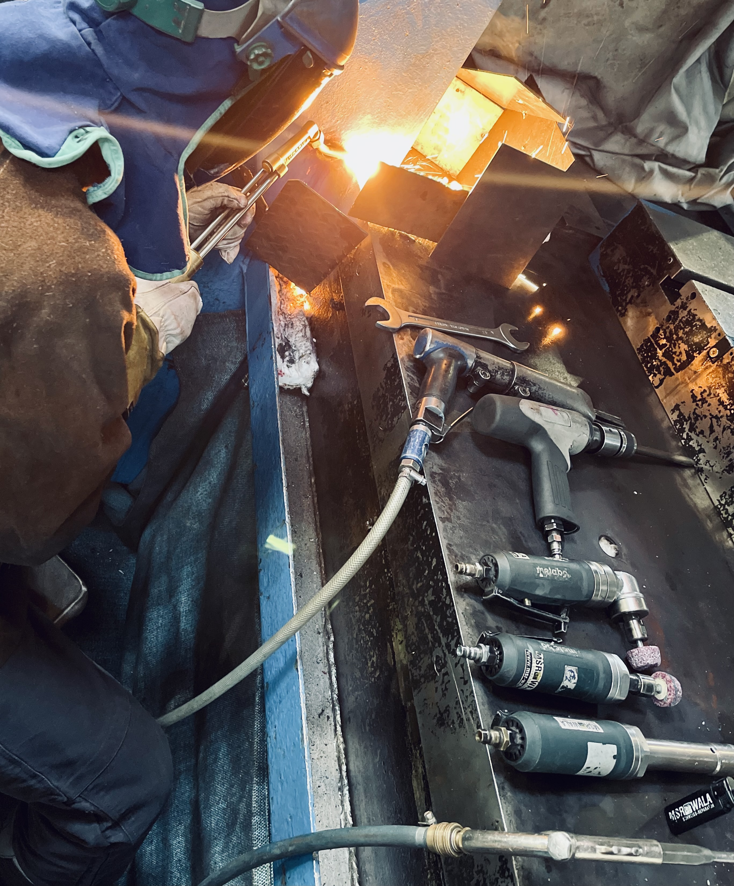
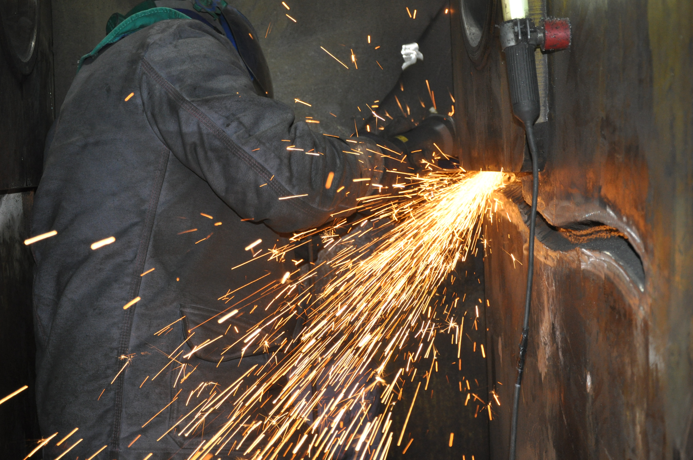

MMA (Lichtbogenschweißen)
Arbeitsprozesse
Prozesse
Schweißverfahren · Schneidarbeiten · Risse ausarbeiten · Nachbechandlung · Rissprüfungen

Schweißverfahren
MAG (Metall-Aktiv-Gas)
WIG (Wolfram-Inertgas-Schweißen)
Riegelarbeiten (Guss-Reparaturen)


Schneidarbeiten
- Brenner (Propan + Sauerstoff) 15-200 mm
- Plasma bis 60 mm


Risse ausarbeiten
Ausfrässen
Mechanisch (Winkelschleifer, Geradeschleifer)
Plasma
Fugenhobeln (Propan - Sauerstoff)
Nachbechandlung
- PITEC
PIT (Pneumatic Impact Treatment) ist ein reproduzierbares HFMI- bzw. HFH-Verfahren (höherfrequentes Hämmern), welches gezielt Druckeigenspannungen in die kritischen Stellen Ihrer Bauteile induziert und bei Schweißnähten gleichzeitig die Geometrie am Nahtübergang optimiert.

- Wärmebehandlung (Vor- und Nachbehandlung)
Rissprüfungen
VT (Visual Testing)
PT (Penetrant Testing)
MT (Magnetpulverprüfung)